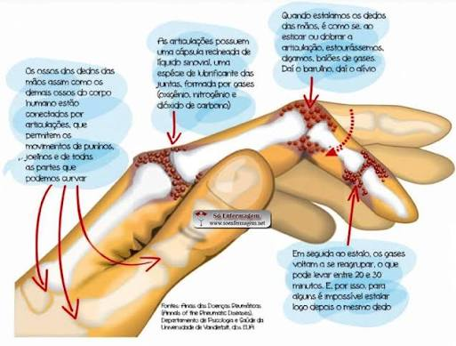
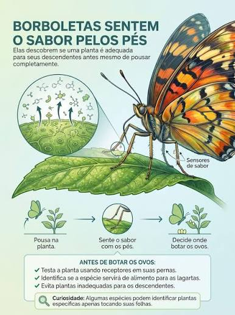
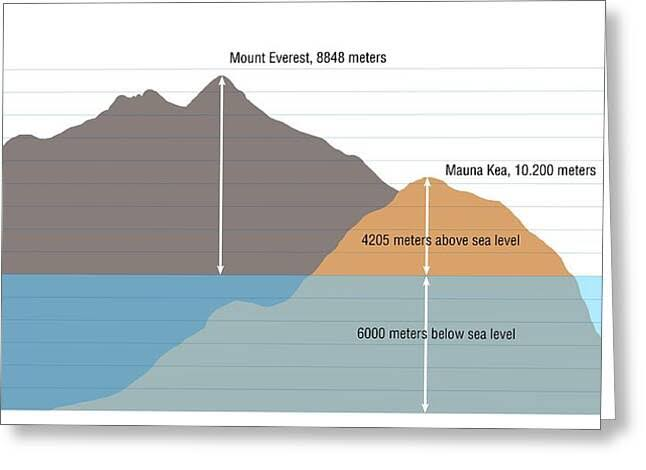
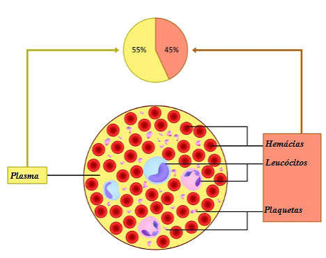

Primeiras curiosidades LEVES
para começar de um jeito que sua mente não entre em colapso vamos falar de informações
mais simples que talves você saiba
1. O estalo dos dedos: O som que você ouve não é dos ossos batendo. Ele vem de bolhas de gás que
se formam e estouram no líquido que lubrifica as suas articulações.

2.Isqueiro vs Fósforo: O isqueiro foi inventado antes do fósforo de fricção.
O primeiro isqueiro surgiu em 1823, enquanto o fósforo palito prático só apareceu em 1826.
3.Nuvens pesadas: Uma nuvem cumulus comum (aquelas brancas e fofinhas) pesa cerca de 500 toneladas.
Isso equivale ao peso de aproximadamente 100 elefantes flutuando sobre a sua cabeça.
4.Sabor das borboletas: As borboletas sentem o gosto das coisas com os pés.
Elas pousam nas plantas para saber se as folhas são saborosas ou seguras para seus ovos.

5.Vacas com sotaque: Pesquisadores britânicos descobriram que as vacas têm sotaques regionais.
O mugido delas muda de tom dependendo do rebanho e da região onde vivem.
site pra você conferir
Segundas curiosidades MEDIAS
1.O mel não estraga. Arqueólogos já encontraram potes de mel com mais de 3.000 anos em túmulos egípcios
e ele ainda estava perfeitamente comestível.

2.Bananas são bagas. Botanicamente falando, a banana se encaixa na definição de baga,
mas o morango, apesar do nome em inglês (strawberry), não é.
3.O ano de 2026 tem algo raro. O ano atual começou em uma quinta-feira
e terminará em uma quinta-feira, uma coincidência de calendário que só acontece poucas vezes por século.

4.A Islândia não tem mosquitos. O clima dinâmico e as
congeladas e descongeladas rápidas do país impedem que o ciclo de vida do inseto se complete.
Mas para o azar dos irlandeses um mosquito foin identificado em uma ambiente natural la pela
primeira vez em seculos
cite
5.O Monte Everest não é a maior montanha.
Em termos de base até o topo, o vulcão Mauna Kea no Havaí é maior, medindo mais de 10.000 metros
(a maior parte embaixo d'água).

Terceiras curiosidade Extremas
1.O tempo passa mais rápido na sua cabeça do que nos seus pés. Devido à teoria da relatividade de Einstein,
a gravidade distorce o tempo. Como a gravidade é ligeiramente mais forte perto do centro da Terra, seus pés
envelhecem um pouco mais devagar que sua cabeça.

2.Existe um buraco negro feito de luz. Chamado de Kugelblitz, ele ocorre se você concentrar uma quantidade tão extrema de energia ou radiação luminosa
em um único ponto que o próprio tecido do espaço-tempo colapsa, criando a gravidade de um buraco negro sem nenhuma matéria física inicial.
3.Toda a humanidade cabe em um cubo de açúcar. Os átomos são 99,9999999% espaço vazio. Se você removesse todo o espaço
vazio de todos os átomos de cada ser humano vivo na Terra,
a massa restante de toda a população caberia no volume de um cubo de açúcar (embora pesasse bilhões de toneladas).
4.Tubarões são mais antigos que as árvores e que os anéis de Saturno. Os primeiros tubarões surgiram há cerca de
450

Curtiosidades ATORMENTATORAS
1. Durante a segunda guerra a União Sovietica ultilizou cachorros como kamikaze
e em alguns casos os cachrros voltavam para seus donos e os explodiam

2. Durante a antiguidades uma das formas de punir alguem
coma morte era o Escafismo que conscistia em prender uma pessoa
em uma bote fechado onde apenas seus braços e pernas eram descobertos e passar
meul ou alguma substancia dosse nela e colocala aderiva no rio onde com o tempo
por causa das substancia dosse moscas e vermes iam para cima da pessoa o que fazia
ela ser decomposta viva

3. Em 1518 em Estrasburgo (França) 400 pessoa começaram a dançar
sem explicação e isso foi chamado de praga da dançaronde as Pesquisadoresdançaram até a morte

4. Durante a Segunda Guerra Mundial, o exército japonês manteve
uma unidade secreta de pesquisa biológica e química na China
onde médicos testaram os limites físicos do corpo humano abrindo prisioneiros
vivos sem anestesia para ver os órgãos funcionando em tempo real.
5.No século XIX, as faculdades de medicina da Escócia precisavam de cadáveres para aulas de
anatomia, o que criou o mercado dos "ressurreiçonistas" (ladrões de túmulos). Para proteger os mortos, as famílias u
savam grades de ferro nos túmulos.Em 1828, a dupla William Burke e William Hare resolveu facilitar o processo: em vez d
e cavar, eles começaram a atrair pessoas vulneráveis para uma hospedaria e as assassinavam por sufocamento para vender os corpos
frescos diretamente para a Universidade de Edimburgo.